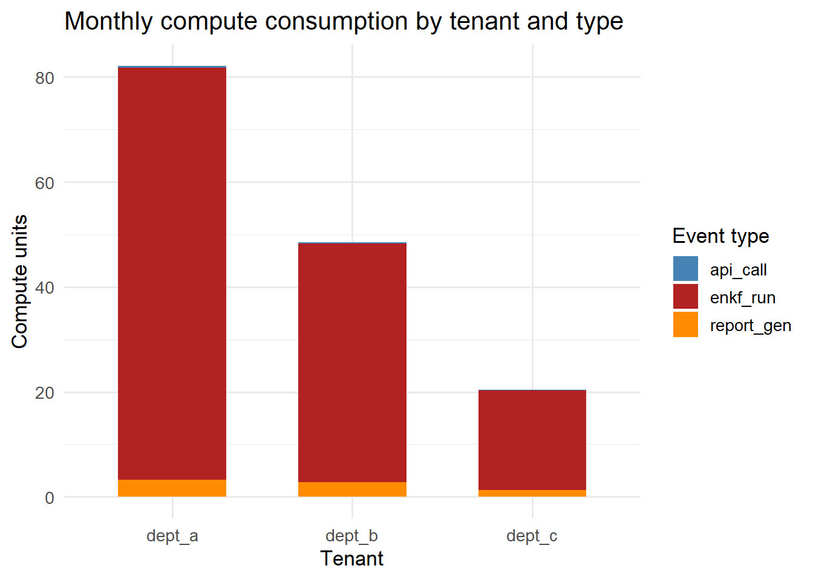

Usage-Based Billing: Metering API Calls and Compute
You cannot charge fairly by simulation run without first measuring what each client consumes. Metering infrastructure, pricing models, and Stripe integration. Skill 19 of 20.
business skills
billing
pricing
Stripe
SaaS
R
Author
Jong-Hoon Kim
Published
April 24, 2026
1 Why metering matters
You sign a contract with a health department for $2,000/month. A year in, you realise one client is running 5× more EnKF jobs than any other — and consuming 60% of your compute budget. Without usage data you cannot renegotiate, cannot offer volume tiers, and cannot identify your most profitable clients.
Usage metering is the instrumentation layer that makes fair, data-driven pricing possible (1). It is also the foundation for the common SaaS pricing models: per-seat, per-API-call, or compute-hour billing.
Three SaaS pricing models and their revenue predictability vs. usage alignment trade-offs. Flat subscriptions are easiest to sell; usage-based aligns incentives best; hybrid is most common in practice.
3 Building the metering layer
Every API call and simulation job should emit a usage event to the database (from Skill 12, TimescaleDB):
library(ggplot2)library(dplyr)usage_summary <- usage |>group_by(tenant_id, event_type) |>summarise(total_cu =sum(compute_units, na.rm=TRUE), .groups="drop")ggplot(usage_summary, aes(x = tenant_id, y = total_cu, fill = event_type)) +geom_col(position ="stack", width =0.6) +scale_fill_manual(values =c(api_call ="steelblue",enkf_run ="firebrick",report_gen ="darkorange"),name ="Event type") +labs(x ="Tenant", y ="Compute units",title ="Monthly compute consumption by tenant and type") +theme_minimal(base_size =13)

Compute unit consumption by tenant and event type. dept_a dominates because it runs more EnKF jobs — the higher-cost event type. This data justifies tier differentiation.
5 Stripe integration
Stripe (1) handles the payment side. For usage-based billing, use Stripe’s Metered Billing: